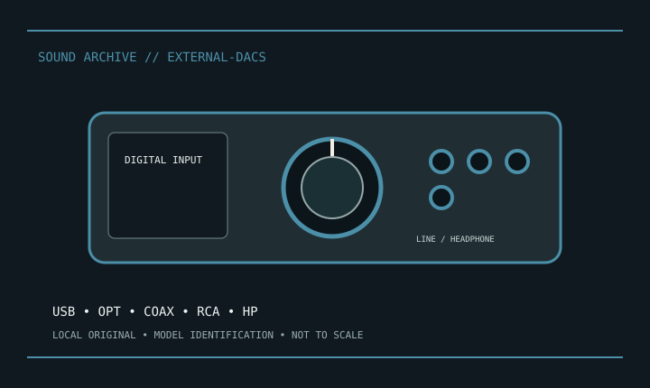

[ INDIVIDUAL MODEL // SOUND HARDWARE ]
TOPPING DX3 Pro+
Desktop DAC/headphone amp: USB, optical, coax, Bluetooth, RCA line and 6.35 mm headphone; USB supports listed PCM to 32-bit/768 kHz.

Model-specific specifications
| Exact model / scope | TOPPING DX3 Pro+. Keep rated supply and remote; verify output mode and Bluetooth version. DX3 Pro+ differs from DX3 Pro. |
|---|---|
| Bus / host | External host-connected DAC/headphone device; USB/S/PDIF input capability depends on the documented mode. |
| Documented functions / connectors | Desktop DAC/headphone amp: USB, optical, coax, Bluetooth, RCA line and 6.35 mm headphone; USB supports listed PCM to 32-bit/768 kHz. |
| Conversion / formats | Format/rate limits depend on input and host driver; see record-specific manufacturer specifications. |
| Drivers / OS | Use the linked model-specific manufacturer support/manual page. Driver and supported OS availability depends on release; no undocumented OS compatibility is asserted. |
| Power / microphone | No microphone phantom power; headphone and line outputs are not interchangeable. |
Compatibility & preservation
Keep rated supply and remote; verify output mode and Bluetooth version. DX3 Pro+ differs from DX3 Pro.
- Photograph model/revision, connectors and included accessories before service.
- Retain the matching manual, driver/firmware and known-working host/routing configuration.
- Follow documented signal levels, connector pinout and power requirements; physical fit alone is not compatibility.
Manufacturer sources
- Manufacturer product information — TOPPING DX3 Pro+Product/model source; match the exact revision and board.
- Manufacturer support and documentationOfficial model documentation, drivers and OS compatibility information.